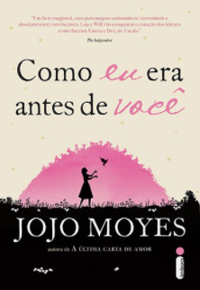

Drama |
|
|---|---|
Bruno tem nove anos e não sabe nada sobre o Holocausto e a Solução Final contra os judeus. Também não faz idéia que seu país está em guerra com boa parte da Europa, e muito menos que sua família está envolvida no conflito. Na verdade, Bruno sabe apenas que foi obrigado a abandonar a espaçosa casa em que vivia em Berlim e a mudar-se para uma região desolada, onde ele não tem ninguém para brincar nem nada para fazer. Da janela do quarto, Bruno pode ver uma cerca, e para além dela centenas de pessoas de pijama, que sempre o deixam com frio na barriga. Em uma de suas andanças Bruno conhece Shmuel, um garoto do outro lado da cerca que curiosamente nasceu no mesmo dia que ele. Conforme a amizade dos dois se intensifica, Bruno vai aos poucos tentando elucidar o mistério que ronda as atividades de seu pai. O menino do pijama listrado é uma fábula sobre amizade em tempos de guerra, e sobre o que acontece quando a inocência é colocada diante de um monstro terrível e inimaginável. "Um livro maravilhoso." - The Guardian "Intenso e perturbador [...] pode-se tornar uma introdução tão memorável ao tema como O diário de Anne Frank foi em sua época." - USA Today "Um livro tão simples e tão bem escrito que beira a perfeição." - The Irish Independent |
|
“Labradores são considerados calmos, comportados e fiéis ― e então surge Marley, tema desta encantadora homenagem a um labrador que fugiu do padrão. A crônica de Grogan sobre o hiperativo e cativante cachorro é escrita com muito humor.” ― Publishers Weekly Quem convive com cachorros sabe: mesmo o mais bagunceiro e desobediente deles ainda derrete o coração dos donos todos os dias com sua dedicação e amor incondicionais Mas Marley é dose para leão! John e Jenny não sabiam no que estavam se metendo quando decidiram adotar aquele lindo filhotinho de labrador… Um cão sem igual, Marley conquistou leitores do mundo inteiro e se tornou protagonista do sucesso cinematográfico de 2008 baseado no livro, estrelado por Jennifer Aniston e Owen Wilson. Se você ainda não leu Marley & Eu, não sabe o que está perdendo. Se já leu, sabe que vale uma segunda, terceira, quarta vez... |
|
Aos 26 anos, Louisa Clark não tem muitas ambições. Ela mora com os pais, a irmã mãe solteira, o sobrinho pequeno e um avô que precisa de cuidados constantes desde que sofreu um derrame. Além disso, trabalha como garçonete num café, um emprego que ela adora e que, apesar de não pagar muito, ajuda nas despesas. E namora Patrick, um triatleta que não parece interessado nela. Não que ela se importe. Quando o café fecha as portas, Lou se vê obrigada a procurar outro emprego. Sem muitas qualificações, a ex-garçonete consegue trabalho como cuidadora de um tetraplégico. Will Traynor, de 35 anos, é inteligente, rico e mal-humorado. Preso a uma cadeira de rodas depois de um acidente de moto, o antes ativo e esportivo Will desconta toda a sua amargura em quem estiver por perto e planeja dar um fim ao seu sofrimento. O que Will não sabe é que Lou está prestes a trazer cor a sua vida. E nenhum dos dois desconfia de que irá mudar para sempre a história um do outro. |
 |